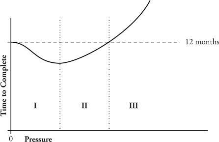

In Region I, workers are responding to increased pressure by trimming any remaining waste, by concentrating on the critical path, and by staying late.
In Region I, workers are responding to increased pressure by trimming any remaining waste, by concentrating on the critical path, and by staying late.A Better Model
A more realistic model of how pressure impacts performance is, I believe, shown in the graph below.

Here we see that pressure has a fairly limited capacity to reduce delivery time, maybe 10 or 15 percent at the most. And excessive pressure can quickly begin to worsen performance. The model is divided into three regions.